Ich möchte Bewerbung neu denken.
Anstatt den klassischen Weg zu gehen, gestalte ich meine Bewerbung im Sinne des Design Thinking und schicke Prototypen in die Welt. Statt mich auf eine reine Auflistung von Tools, Zertifikaten und Know-how zu beschränken, möchte ich mich als Person ganzheitlich zeigen – mit meinen Werten, Stärken, Fragen und Entwicklungspotenzialen.
Dieses Portfolio ist ein Versuch, mein Denken und Handeln transparent zu machen. Es ist kein starres Konstrukt, sondern ein offener Entwurf.
Eine Einladung an die Welt, gemeinsam mit mir herauszufinden, wo ich wirksam sein kann.
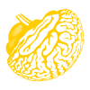
Ich begreife meinen Weg nicht als geradlinigen Aufstieg oder Abfolge, sondern als Bewegung: eine lebendige, spiralförmige Entwicklung. Jede Station, jeder Umweg, jede Unterbrechung ist Teil davon – und Quelle neuer Perspektiven.
Hier zeige ich nicht meinen Lebenslauf, sondern meine Lebensbewegung.
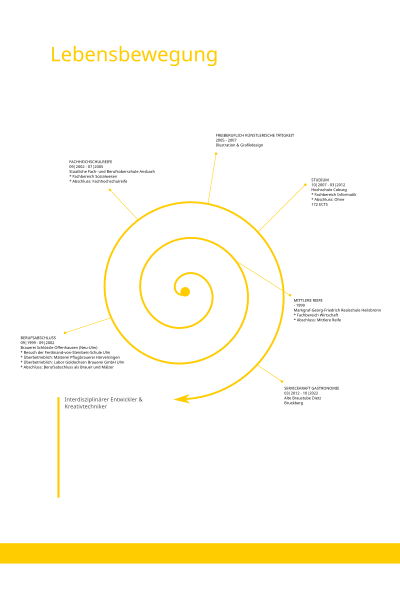
Stärken
- Kreative Problemlösungskompetenz
- Konzeptstärke & abstraktes Denken
- Gedankliche Flexibilität & schnelle Auffassungsgabe
- Vielseitige Interessen & Lernbereitschaft
- Kommunikationsfähigkeit & Teamspirit
- Empathie & soziale Zugewandtheit
Soziale & transversale Kompetenzen
Soziale Kompetenzen durch gelebte Inklusion [Mehr dazu erfahren..]
Ich bin in einem kleinen Ort aufgewachsen, in dem eine große Einrichtung von Diakoneo (ehemals Diakonie) ansässig ist. Diese bietet Menschen mit körperlicher und geistiger Behinderung ein umfassendes Wohn-, Lebens-, Lern- und Arbeitsumfeld. Die Einrichtung und ihre Bewohnerinnen waren von Anfang an selbstverständlicher Bestandteil meines Alltags.
Diese frühe Prägung hat mein soziales Verständnis tief beeinflusst. Während meiner Schulzeit an der Fachoberschule im Bereich Sozialwesen konnte ich durch schulbegleitende Praktika meine Erfahrungen weiter vertiefen – unter anderem im Bereich Wohnen, in einer Förderschule sowie in der Tagesstätte.
Auch außerhalb der Schule habe ich mich engagiert, z. B. bei der Mitgestaltung einer integrativen Kinderbibelwoche. Die Zusammenarbeit mit Menschen mit Behinderung habe ich immer als bereichernd erlebt.
Diese Erfahrungen haben nicht nur meine sozialen Kompetenzen gestärkt, sondern auch mein Werteverständnis geprägt – insbesondere im Hinblick auf Inklusion, Empathie, Kommunikation und zwischenmenschliche Verantwortung.
Wachsende Ambiguitätstoleranz & Offenheit für Wandel [Gedanken vertiefen..]
Veränderung fällt mir nicht immer leicht – sie ist oft mit Unsicherheit, Kontrollverlust und inneren Widerständen verbunden. Und doch habe ich in den letzten Jahren gelernt, mich diesen Gefühlen nicht nur zu stellen, sondern mit ihnen zu arbeiten.
Indem ich mich bewusst auf offene Prozesse einlasse – wie bei der Gestaltung dieses Portfolios als lebendigen Prototyp – übe ich mich darin, Wandel nicht als Bedrohung, sondern als Gestaltungsraum zu begreifen.
Ich bewege mich heute bewusst zwischen Disziplinen, bringe unterschiedliche Perspektiven miteinander in Verbindung und lerne, Spannungen auszuhalten. Auch persönliche Themen wie eine späte ADHS-Diagnose sehe ich nicht als Stigma, sondern als Möglichkeit zur Klärung.
So begreife ich mehr und mehr auch meinen Lebenslauf nicht als linearen Aufstieg oder Makel-Liste, sondern als etwas Wertvolles – als Bewegung, die mein Lernen, mein Ringen, meine Wandlungsfähigkeit sichtbar macht.
Interdisziplinäre Zusammenarbeit & Vermittlung technischer Inhalte [Gestalten..]
Während meines Informatikstudiums habe ich interdisziplinär gearbeitet und gemeinsam mit einem Professor des integrierten Produktdesigns einen Einsteigerkurs zum Thema Programmieren für Gestalter konzipiert und durchgeführt.
Dabei konnte ich nicht nur wertvolle Einblicke in die Denk- und Arbeitsweise von Gestaltern gewinnen, sondern auch Brücken zwischen den Disziplinen schlagen.
Eine zentrale Erkenntnis war für mich, dass gute Kommunikation essenziell ist – insbesondere, wenn es darum geht, technische Inhalte für eine fachfremde Zielgruppe verständlich und praxisnah aufzubereiten.
Erlebnisorientierte Vermittlung & Veranstaltungsentwicklung [Erlebnis starten..]
Während meiner Tätigkeit in der Gastronomie habe ich eigenständig Biererlebnis-Seminare konzipiert, organisiert und moderiert. Diese Veranstaltungen verbanden pädagogische Wissensvermittlung mit sensorischem Erleben, emotionalem Storytelling und interaktiven Gruppenprozessen.
In Gruppen von 10 bis 14 Personen vermittelte ich anschaulich die Grundlagen deutscher und internationaler Bierstile, erläuterte Rohstoffkunde sowie den Brauprozess und setzte Verkostungen mit kreativen Pairings in Szene.
Diese Erfahrung schärfte meine Fähigkeiten in folgenden Bereichen:
- Konzeptentwicklung: Planung und kreative Gestaltung erlebnisorientierter Inhalte
- Didaktik & Vermittlung: Strukturierte, zielgruppengerechte Wissensvermittlung
- Moderation & Storytelling: Souveränes Auftreten und lebendige Sprache
- Veranstaltungsorganisation: Projektplanung, Ressourcenmanagement, Durchführung
Zwischen Code und Bewusstsein
Ich sehe Technologie als lebendigen Organismus, der im Spannungsfeld von Design, Technik und Ethik wächst. Mein Ziel ist es, in Teams und Organisationen zu wirken, die diesen ganzheitlichen Blick teilen und gemeinsam nachhaltig, bewusst und wirkungsvoll gestalten.
Persönliches 3D-Projekt – Open-Source-Java-Bibliothek zur Erkundung von 3D-Geometrie
Dieses Projekt ist aus meiner Faszination für 3D-Programmierung entstanden. Die Java-Bibliothek habe ich ursprünglich 2015/2016 als persönliches Lernprojekt gestartet, mit dem Ziel, ein tieferes Verständnis für den Aufbau und die Verarbeitung von 3D-Geometrie zu entwickeln.
Der Impuls dazu kam während eines Praktikums im Umfeld von Produktdesign-Studierenden, wo ich erstmals mit der kreativen Programmierumgebung Processing in Kontakt kam. Die visuelle, zugängliche Art von Processing hat mich sofort begeistert – insbesondere die Möglichkeit, Ideen schnell grafisch umzusetzen.
Technischer Fokus
Die Bibliothek ist von Grund auf in Java geschrieben und unabhängig von externen Frameworks konzipiert. Sie ermöglicht das Erstellen, Transformieren und Visualisieren von 3D-Meshes auf Basis einfacher geometrischer Prinzipien. Obwohl sie nicht auf Processing angewiesen ist, lässt sich diese Umgebung hervorragend zur Visualisierung nutzen – insbesondere durch deren Unterstützung für JAVA2D und OpenGL.
Projekt auf GitHub: Artifact Forms GitHub.
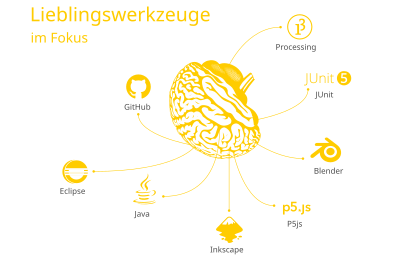
Kontakt
Ich freue mich auf den Austausch! Du erreichst mich am besten per E-Mail: h.s.dietz@web.de
Projekte & Prototypen
NBT-Bibliothek
Diese Java-Bibliothek ermöglicht das Lesen, Schreiben und Validieren von NBT- und Schematic-Dateien, wie sie Minecraft intern verwendet. Entstanden aus der Notwendigkeit, große 3D-Modelle automatisiert in Minecraft-Welten zu importieren.
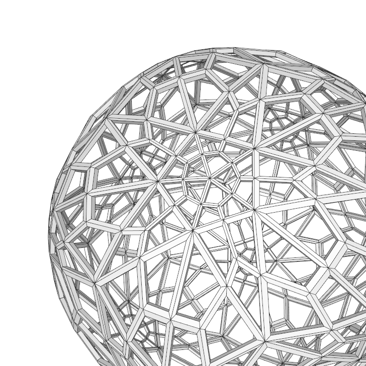
Formvielfalt durch Algorithmen
Durch die Kombination einfacher Transformationen lassen sich aus Grundkörpern komplexe, organische Strukturen erzeugen. Meine Modifikatoren laden zum spielerischen Forschen mit Geometrie ein – ganz ohne manuelles Modellieren.
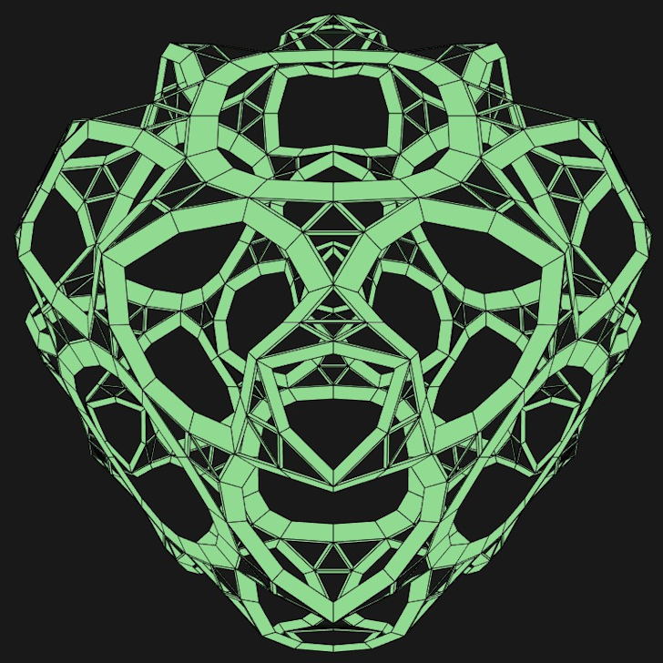
Spielerische Erkundung komplexer Polyeder
Entdecke, wie einfache geometrische Transformationen faszinierende neue Formen erschaffen. Der Conway Explorer kombiniert Dual-, Ambo- und Kis-Operatoren zu überraschenden 3D-Strukturen.
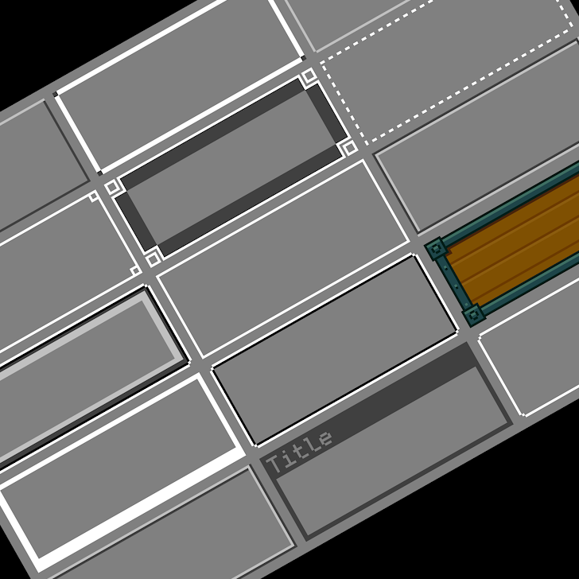
Pixelart UI
Vielseitige Java-2D-Pixelart-Library mit integriertem Layout-Management und einer umfangreichen Auswahl an Pixel-Borders.
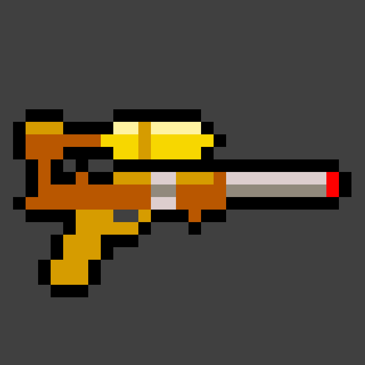
Enter the Gungeon Clone
In diesem Projekt habe ich die Kernmechaniken des Indie-Hits „Enter the Gungeon“ in einer eigenen 2D-Java-Umsetzung nachprogrammiert. Dabei lag der Fokus auf spielerischem Lernen und dem vertieften Verständnis von Game-Design, Animationen und Steuerungssystemen.
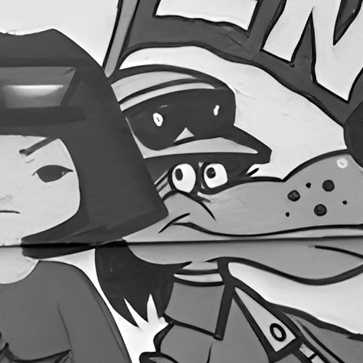
Ehrenamtliches Engagement bei den Style Scouts Nürnberg
Im Rahmen eines ehrenamtlichen Hospitationsprojekts begleitete ich die Style Scouts Akademie Nürnberg bei der Durchführung kreativer Jugendprojekte im Bereich Style-Writing und Graffiti.
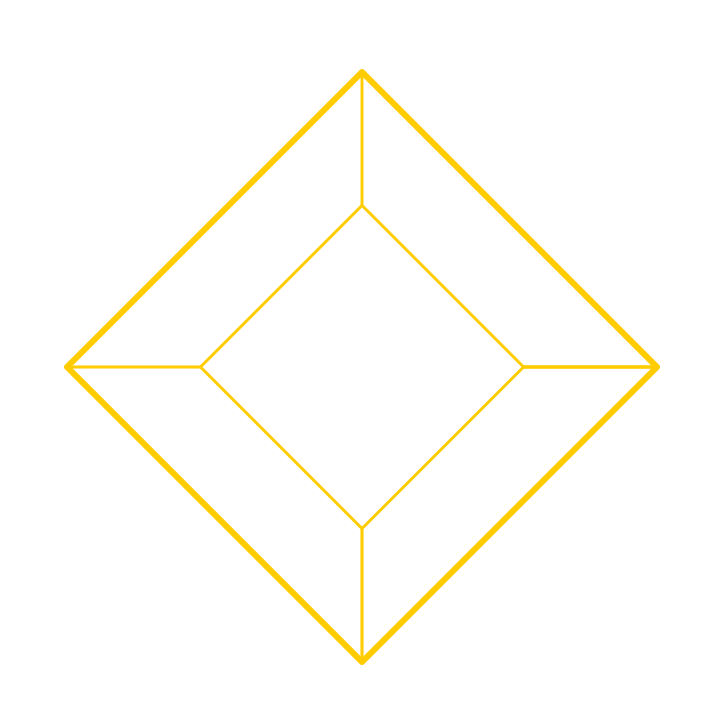
Personalisiertes Logo
Ein individuelles Logo, das mich als Mensch und meinen Weg visuell repräsentiert. Es dient als gestalterisches Symbol für Identität, Entwicklung und Ausdruck der eigenen Persönlichkeit.
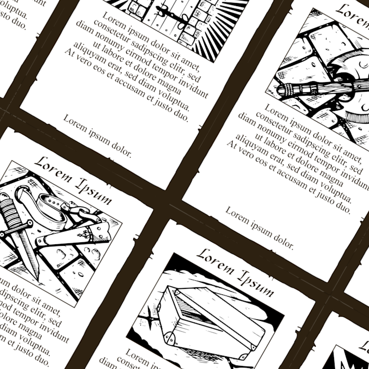
Hero Quest Tribute – Handgezeichnete Kartenillustrationen
Inspiriert von den düsteren Fantasy-Illustrationen der HeroQuest-Spielkarten der 90er Jahre, entstand diese Sammlung handgezeichneter Motive.
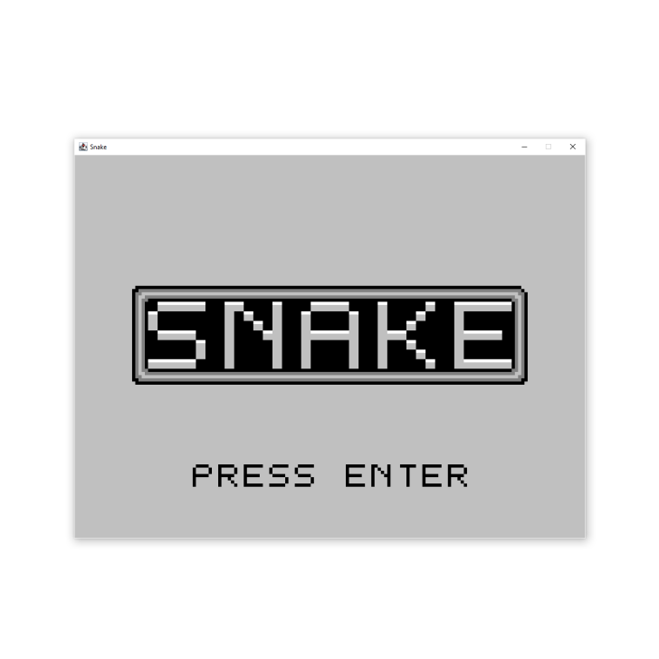
Retro Game Jam – Snake im Gameboy-Stil
Eine minimalistische Neuinterpretation des Klassikers Snake mit authentischer Gameboy-Ästhetik, Sprite-Skalierung per Nearest-Neighbor und ikonischem Fade-Effekt. Entstanden als Hommage an die 8-Bit-Ära meiner Kindheit.